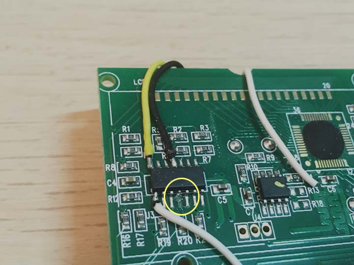
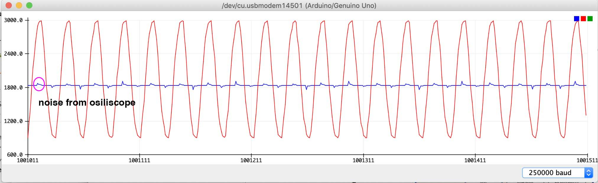

Learn
Comparason
by Sid Chou / 05.01.2020This project is inspired by Lady Ada's Tweet-a-watt. (Original tutorial is linked, this blog will include modification for newer version of Kill-a-Watt and avoiding using x-bee)
material
You can reference the list of material on Adafruit, but here we will only need:
For more information on the materials, visit the Resources page
Start
For this section, you can reference with transmitter section of the Adafruit tutorial
For now you can skip through the X-bee part, till when it open the the case.
There wont be too much difference for the beginning steps,
you want to open the casing for Kill-a-Watt by unscrewing the 3 screws on the back.
Detatch the PCB board from the just-opened-case by removing the 4 screws on the pcb.
Note: it will be a good idea to keep the screws in a small container so you dont lose them.
Since Lady Ada did her project back in 2014, the design of the pcb boards on kill-a-watt has been updated.
Now, you can still find the "LM2902N" op-amp chip(mentioned in Lady Ada's tutorial, this is where we are going to "steal" the signal from the kill-a-watt)
but as a surface mount underneathe the LCD.
Unfortunately, you do have to rip off the LCD screen to access the op-amp chip, so you have to lose the Original display function through this project.
The next step is to solder the power(red), ground(black), amp signal(yellow) and voltage signal(orange on adafruit, green here) from the op-amp.
I cut off some plastics to get some clearance for the wires, and drilled a hole for them to come out for some tests, since I wasn't about to plug this in to 120VAC outlet without the case, and you shouldn't either!!!
Note: I am using stranded wires here, if you are using solid wire, be aware that it might rip the solder patch from the PCB board if you are moving it around. More on wire types...
Next, we can close the case and feed the wires through the drilled hole.

You can see the soldered wires and chip from the the window

lets test the voltage from power(red) to ground(black). Its reading just a bit above 6 V.

Test
For this section, refer to software section of Tweet-a-Watt.
Note: When you are testing the readings, should use a high wattage device appliance, ie, an incandescent light builb, blow dryer, heating fan, etc. Anything with a heating coil is a great choise.
To test if i got some decent reading, i started connecting to an osiliscope.

Note: Wall power AC voltage commonly known to be ±120VAC(in the United State); however, that is refering as 'RMS' value. actual peak to peak are ±170VDC.
The next step is to plug the data into a micro controller. And you can start to plot out the voltage and current readings.
Note: If you were using osiliscope in the earlier step, you MUST disconnect the wires from the osiliscope when you are getting readings with an Arduino. otherwise you will be reading the noise from osiliscope.
Since we want to calculate the wattage use(1W = 1J/s), it is important to know the sample rate of the micro-controller. Right here we are doing once every milli-second. Knowing that the frequency of AC is 60 Hz, a complete cylce will take 1/60s, which is about 16.67s so we can know that 17 samples will give us a little more than 1 cycle.
Note: you can't guarantee that the samples line up every cycles, but we only need it for the timeslices to do the calculation.